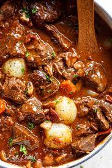

Boeuf Bourguignon

Description
It’s a French beef stew braised in a deep red wine and beef
stock. It is sometimes referred to as Beef Burgundy, as deep
red Burgundy wines are used in the stew.
Ingredients:
- Olive oil
- 12 oz bacon
- 3 lbs chuck beef
- 1 lb carrots
- 2 yellow onions
- 10 cloves chopped garlic
- 1/2 cup Cognac
- 2 cups Pinot Noir, or Burgundy
- 2 cups beef broth
- 2 tbsp tomato paste
- 1 tsp dried thyme
- 4 tbsp butter
- 3 tbsp flour
- 1 lb pearl onions
- 1 lb cremini mushrooms
- 3 bay leaves
- salt and black pepper
- chopped fresh parsley for garnish
Steps:
-
Cook bacon in pot in an oven at 350 degrees F until
lightly browned. Remove the bacon from the pot, but
keep the oil in.
-
Season the beef with salt and black pepper. Cook the
beef in the pot until brown on all sides. Set beef
aside.
-
Cook carrots, onions, garlic for 5 mins until onions
are lightly browned. Add in salt while cooking.
Deglaze the bottom of the pot with oil. Add Cognac
and cook for another 10 mins on medium.
-
Add beef, bacon, wine, and beef broth to the pot. Add
tomato paste, thyme, and bay leaves. Bring to a simmer.
Cover the pot and place in oven for 1.5-2 hrs.
-
Saute mushrooms with 2 tbsp of butter in skillet until
soft.
-
Once stew is finished, remove from oven and add butter,
flour, peal onions, and mushrooms. Bring to a boil on
the stovetop and reduce to a simmer. Cover and simmer
for 30 mins. Skim off fat, remove bay leaves, and season
with salt and pepper to taste.
-
Serve with fresh parsley as garnish.